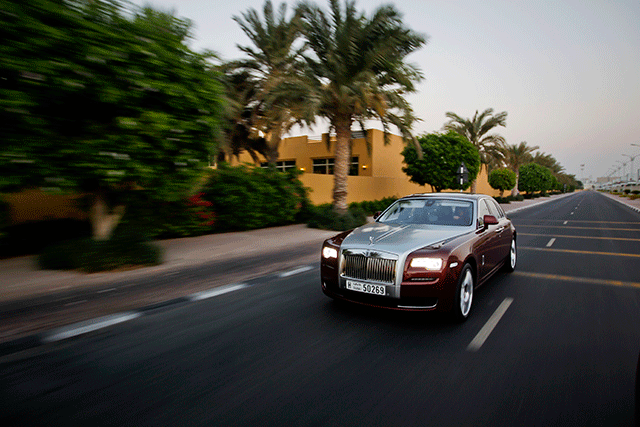

<div class="video">
      <!-- <video  id="vi" width="800px" height="800px" >
          <source src="nature.mp4" type="video/mp4">

        </video> -->
      
      <div class="picture">
        <!-- "Сказать,что мы сделали все что могли,недостаточно.
        Мы должны добиться того,что нужно - и только тогда мы обретем настоящий успех.
        Успех-это умение двигаться от неудачи к неудаче,не теряя энтузиазма.
        Сегодня ты делаешь код,завтра код делает тебе деньги." -->
        We believe the best way to learn a language is to speak it, no amount of studying grammar from a book or in a classroom can compare to the value of speaking to a native speaker one to one.

        Live-English.net was founded in 2006. We provide native-English teachers online from countries such as the US, UK & Australia to our students anytime and anywhere in the world.


      </div>
